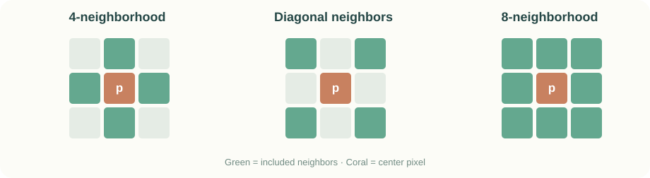
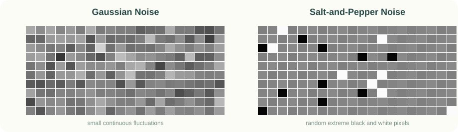
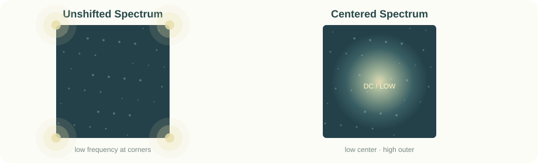
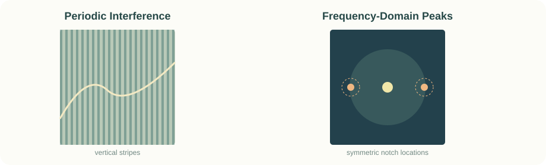

LAB 01 · HISTOGRAM
直方图均衡化计算台
用第3章PPT原题的数据开始；修改8个灰度的频数，再查看累计概率、映射关系与新直方图。
Before · Original Histogram
After · Equalized Histogram
| Input Gray | Count | Probability | CDF | Output Gray |
|---|
空间域直接改像素；频率域先变换再滤波；复原追查损坏原因；形态学直接操作目标形状。
灰度变换 / 直方图 / 均值与中值 / 拉普拉斯
直接改像素 ↗ CHAPTER 04傅里叶 / 低通与高通 / 同态滤波
变换后处理 ↗ CHAPTER 05噪声模型 / 周期噪声 / 逆滤波
逆向恢复 ↗ CHAPTER 06腐蚀 / 膨胀 / 开闭运算
操作形状 ↗累计概率、映射灰度
邻域计算、排序
模板乘加、符号
找对称异常亮点
阅读约定：正文是优先内容；标注「★」的折叠框是可选深入模块；「PPT原题」尽量按上传课件的数据来讲解。第5章未提供独立PPT，使用《复习》PPT提纲与教材概念补足，并在页面说明。
数字图像是一个二维数字表：每个位置叫像素，像素里存放灰度或颜色。
f(x,y) 表示。像素是它的基本组成单位。仅有两种值，如0与1。
一个像素一个灰度值，8位图为0～255。
每个像素含红、绿、蓝三分量。
| 层次 | 输入 → 输出 | 举例 |
|---|---|---|
| 图像处理 | 图像 → 图像 | 照片去噪 |
| 图像分析 | 图像 → 数据 | 检测细胞数目 |
| 图像理解 | 图像 → 解释 | 理解场景中的动作 |
记忆：处理改图像，分析提数据，理解得意义。
图像不只来自可见光，还可通过红外、X射线、微波、超声波、电子显微镜等获得。数字图像处理的任务包括增强、复原、分割、特征提取、识别与压缩等。计算机图形学通常从数据或模型生成图像，图像处理通常对已有图像加工。
先分清采样和量化，再掌握存储空间、插值、邻域与距离度量。
离散化坐标(x,y)：决定有多少个像素。太稀疏会损失细节、出现块状效果。
离散化灰度 f(x,y)：决定有多少种亮度。级数太少会产生伪轮廓。
M×N是像素数；L=2k是灰度级数。256级灰度=8 bit/像素。
256×256×8=524288 bit → 除以8=65536 Byte → 64 KiB（不计文件头）。
| 方法 | 思路 | 特点 |
|---|---|---|
| 最近邻 | 取最近已知像素 | 快，但锯齿明显 |
| 双线性 | 周围4像素距离加权 | 较平滑，边缘可能变模糊 |
| 三次插值 | 使用更多邻点 | 更复杂，质量常较好 |
例：[[10,20],[30,40]] 的正中心双线性插值：(10+20+30+40)/4=25。

4邻域：上下左右；D邻域：四个对角；8邻域：两者之和。邻接除了位置相邻，还要求像素取值属于指定灰度集合V。
m邻接：若两个像素对角相邻，还要检查它们共同的4邻域中没有属于V的像素；用来减少8邻接的二义性。
对应圆形、菱形、正方形等距线。Dm是符合m邻接的最短通路长度。
课件给出的答案为 D₄=5、D₈=3、Dm=4。注意D₄/D₈取决于两端坐标，而Dₘ需要看哪些像素可以连通。
q∈N₄(p)，或者q∈ND(p) 且 N₄(p)∩N₄(q) 中无属于V的像素。做题时先标出属于V的可通行像素，再计算最短通路；不要将简单的D₈当作Dₘ。
点处理只看当前像素；邻域处理还看周围像素。空间域增强的共同目标是让图像更适合特定应用。
f是原图、T是处理规则、g是输出。
| 名称 | 变换 | 作用 |
|---|---|---|
| 灰度反转 | s=L−1−r | 黑白颠倒，突出暗背景中的亮细节 |
| 对数变换 | s=c log(1+r) | 扩展暗部，压缩高灰度动态范围 |
| 幂次变换 | s=c rγ | 归一化时γ<1提亮，γ>1压暗 |
| 分段线性 | 分段指定T(r) | 对比拉伸、灰度切割、位平面切割 |
最大灰度255，所以新灰度 255−60=195。
对比拉伸：把狭窄灰度范围扩宽；灰度切割：选定灰度区间突出显示；位平面切割：把8bit拆成8个二进制层，高位通常包含更重要的视觉信息。
直方图的横轴是灰度值，纵轴是该灰度出现的次数或概率；它不记录像素的空间位置。暗图像的直方图常偏左，低对比度图像的直方图常较窄。
nₖ为灰度rₖ的频数，MN为总像素数。
求概率 → 逐项累加 → 乘最大灰度L−1 → 取整 → 合并映射后的频数。
原灰度0～7的频数：790, 1023, 850, 656, 329, 245, 122, 81；总数4096。
灰度2的累计概率=(790+1023+850)/4096≈0.6501，映射新灰度=round(7×0.6501)=5。
0→11→32→53→64→65→76→77→7均衡后的频数：0, 790, 0, 1023, 0, 850, 985, 448。新灰度6的985个像素来自原灰度3和4：656+329=985。
亲手做一次均衡化 →直方图规定化：让直方图接近指定分布；分别求原分布与目标分布的累计概率后匹配。局部增强：利用局部均值、方差或局部直方图改善小区域细节。
线性滤波把3×3邻域像素与对应模板系数相乘再求和；非线性滤波可根据邻域排序取中值。均值滤波可视为低通，拉普拉斯可视为高通。
抑制快速变化与一些随机噪声，但可能让边缘变模糊。
强化边缘和纹理，也容易放大噪声。
1 2 2 1 [15] 1 2 1 2
均值：9个数之和27，27/9=3。
中值：排序1,1,1,1,2,2,2,2,15，取第5个=2。
椒盐噪声优先中值滤波；独立零均值高斯噪声常用均值或加权均值减弱，但边缘也可能被模糊。
打开3×3滤波计算器 →
非线性顺序统计滤波：中值去脉冲噪声；最大值可抑制孤立暗点，最小值可抑制孤立亮点。边界处理要注意补零、复制边界或只计算内部像素。
0 1 0 1 −4 1 0 1 0
锐化 = 原图 减响应
0 −1 0 −1 4 −1 0 −1 0
锐化 = 原图 加响应
中心负做减法，中心正做加法。 模板系数之和为0，恒定灰度区域响应为0。
2 7 3 5 [8] 1 9 2 8
中心为+4的模板，响应=4×8−(7+5+1+2)=17；锐化值=8+17=25。
⚠️ 响应17与锐化后的25不是同一个数。若整个图像边界补0，PPT给出的响应矩阵为：
−4 15 4 1 17 −15 29 −17 29
梯度方向是灰度增长最快的方向，边缘走向与它垂直。
| 算子 | 尺寸 | 特点 |
|---|---|---|
| Roberts | 2×2 | 交叉差分、噪声敏感 |
| Prewitt | 3×3 | 比较行列灰度 |
| Sobel | 3×3 | 中间系数为2，抑噪相对更好 |
−1 0 1 −2 0 2 −1 0 1
−1 −2 −1 0 0 0 1 2 1
下面的 JavaScript 是交互实验使用的核心算法的简化版本，可以直接理解“概率 → 累计 → 取整”的步骤。
// 3bit图像，8个灰度级
const counts = [790, 1023, 850, 656, 329, 245, 122, 81];
const total = counts.reduce((a, b) => a + b, 0);
let cumulative = 0;
const mapping = counts.map(count => {
cumulative += count / total;
return Math.round(7 * cumulative);
});
console.log(mapping); // [1, 3, 5, 6, 6, 7, 7, 7]离散灰度均衡化需要取整，多个输入灰度可能变为同一个输出灰度，因此结果未必严格均匀（简并）。规定化则是让累计分布接近指定目标分布。
中心+4模板加上单位模板后形成一次计算的锐化核：
0 −1 0 −1 5 −1 0 −1 0
拉普拉斯对孤立噪声极敏感，实践中往往先去噪后锐化。
归一化灰度r=0.25时：γ=0.5→0.5（亮），γ=2→0.0625（暗）。对数变换常用来显示动态范围巨大的傅里叶频谱。高位比特平面通常含主要视觉结构，低位常携带微小细节。
傅里叶变换就像把一首歌拆成不同音高；图像也能拆成空间频率成分。低频描述缓慢变化，高频描述边缘、细节，也可能包括噪声。

输入 f(x,y) 是灰度表格，输出 F(u,v) 是复数频谱。幅度谱说明各频率强度，相位谱包含重要的位置和结构信息，功率谱等于幅度平方。
逆DFT的指数变为正号，并乘以1/(MN)。正、逆变换的尺寸相同。
直流分量：F(0,0)是图像像素灰度之和，所以平均灰度是 F(0,0)/(MN)（按这里的DFT约定）。
中心化：将未中心化频谱四角附近的低频移到中心，便于观察。中心化后中心低频、四周高频。
H=1表示让该频率通过，H=0表示完全去掉；0到1之间表示部分衰减。
低通保留中心附近低频，抑制外围高频。可平滑细小噪声，但也容易模糊边缘。
| 滤波器 | 特征 | 振铃 |
|---|---|---|
| 理想低通 | 截止点突变 | 明显 |
| 巴特沃斯低通 | 过渡平滑度受阶数n控制 | 高阶较明显 |
| 高斯低通 | 曲线最平滑 | 无振铃 |
D是到频谱中心的距离。D₀越小，通常越模糊；巴特沃斯n越大，越接近理想截断。
振铃：边缘附近出现不真实的明暗波纹。频域截断越陡，空间域振铃通常越明显。
高通保留高频，突出边缘和细节，但同时可能增强噪声。三类高通分别是理想、巴特沃斯和高斯高通。
纯高通可能使背景偏暗。高频强调可通过 H_HFE=a+b H_HP 保留一部分低频同时增强边缘。
图像形成模型 f=i·r：照射分量 i 常缓慢变化（近似低频），反射分量 r 包含较多结构变化（近似高频）。为了分别调整它们，先取对数：
将乘性关系变成加性关系，随后做频域滤波，适当压低低频、增强高频，最后指数还原。
核心定理：空域卷积 ↔ 频域乘积。小模板通常直接在空间域计算方便，大型卷积则可能更适合FFT。
连续傅里叶变换下：ℱ{∇²f}=−4π²(u²+v²)F(u,v)。频率越高，二阶微分放大的幅值越大，解释了拉普拉斯为何用于锐化。
DFT是线性的，频谱以M、N为周期；对实值图像存在共轭对称性。空间平移主要改变相位，不改变完整信号的幅度谱。频谱中强能量方向常与图像中对应边缘方向垂直。
PPT第54页：若g(m,n)=2f(m,n)−f(m+1,n)−f(m,n+1)，则H(u,v)=2−ej2πu/M−ej2πv/N。
二维DFT可先对各行进行一维DFT，再对各列进行一维DFT；FFT是快速求DFT的方法。DFT相乘天然对应循环卷积。若两个数组尺寸为A×B和C×D，计算线性卷积时至少填充至(A+C−1)×(B+D−1)，避免卷绕误差。
增强关注“更好看、特征更突出”，复原关注“为什么损坏，以及怎样尽可能恢复”。本章按《复习》PPT第5章提纲，并以教材知识补足（未上传单独的第5章课件）。
原图f → 退化系统H（例如失焦） → 再叠加噪声η → 退化图g。
若只有加性噪声：g=f+η；若退化系统线性、位置不变：
空间域卷积在频域变成乘积；H是退化函数的频率响应。
| 类型 | 通俗理解 | 常见处理 |
|---|---|---|
| 高斯 | 灰度附近的连续随机波动 | 均值或加权均值 |
| 瑞利 | 单侧偏斜分布 | 按概率模型估计 |
| 伽马 / 爱尔兰 | 非负、参数可调分布 | 按概率模型估计 |
| 指数 | 偏向较小正值 | 按概率模型估计 |
| 均匀 | 指定区间内等概率 | 中点滤波等 |
| 椒盐 | 孤立的极黑/极白点 | 中值滤波 |
| 周期噪声 | 规律性明暗条纹 | 频域陷波 |
噪声估计：可采集均匀场景或在退化图中选取平坦区域，分析其直方图，估计噪声类型、均值和方差。
| 滤波器 | 运算 | 适用点 |
|---|---|---|
| 算术均值 | 邻域平均 | 压低独立随机噪声方差 |
| 几何均值 | 像素乘积开方（相应次幂） | 较温和的平滑 |
| 谐波均值 | n/∑(1/g) | 对某些亮脉冲有效 |
| 逆谐波均值 | ∑gQ+1/∑gQ | 按Q的符号选择抑制黑/白点 |
| 中值 / 最大 / 最小 | 排序后选择统计量 | 椒盐 / 暗脉冲 / 亮脉冲 |
| 中点 / 修正α均值 | 极值平均 / 截断极值后平均 | 均匀噪声 / 混合噪声 |
| 自适应滤波 | 根据局部统计调整 | 希望更好保护细节 |
10 11 9 10 [255] 11 9 10 10
均值=(335/9)≈37.22；排序取中值=10。中值更接近真实区域灰度。

周期性干扰在频谱中常表现为成对的异常峰值。普通低通会连原图细节一起模糊；陷波滤波器只压低指定频率附近的峰值。
中心为(4,4)。在两点设置H(2,4)=H(6,4)=0，其余尽可能保持1，再做G_filtered=H·G并逆变换。实际工程可在峰值附近形成小范围平滑陷波。
拖动频谱噪声位置 →区别：带阻滤波去掉一段频率带（常呈环状）；陷波阻止滤波只去掉特定离散频率附近的区域；带通与陷波通过则是对应的“通过”方式。
退化函数H可通过观察法（看模糊规律）、试验法（测已知目标或点源）、建模法（根据成像物理过程）估计。
已知H且无噪声时可直接“除掉退化”。例：G=20、H=0.5，则F̂=40。
最大陷阱：有噪声时F̂=F+N/H；如果H接近0，噪声项N/H会被严重放大。常用限制频率范围或维纳滤波改善。
独立加性零均值噪声平均M帧后，标准差变成 σ/√M；令√M=10，则M=100帧。每秒30帧时需 100/30≈3.33秒。
线性满足H(af₁+bf₂)=aH(f₁)+bH(f₂)。位置不变表示输入空间平移后，输出相应平移。平方系统H[f]=f²可以位置不变却不是线性，切记不要把两个条件混为一谈。
逆谐波均值为ΣgQ+1/ΣgQ。通常Q>0有利于抑制椒噪声（黑点），Q<0有利于抑制盐噪声（白点）；遇到0与负指数要注意定义。维纳滤波综合信号/噪声功率信息，在去模糊和抑噪之间折中。
形态学用集合表示前景像素，再用小模板「结构元素」探测和修改形状。
全放进去才算。结构元素的所有前景位置必须属于目标；通常让目标缩小、断开细连接。
碰到就算。移动适当反射后的结构元素，与目标相交即计入；通常扩大目标、连接裂缝。
1 1 1 1 1 1 1 1 1
0 0 0 0 1 0 0 0 0
只有中心位置能把整个3×3结构元素放进原目标，所以只保留中心1。反过来，孤立的一个1膨胀后可变成3×3方块。
亲手点格子做形态学 →| 操作 | 顺序 | 典型作用 |
|---|---|---|
| 开操作 A∘B | 先腐蚀，再膨胀 | 去细小突出物、分离窄连接 |
| 闭操作 A•B | 先膨胀，再腐蚀 | 补小孔、连接窄缝 |
开：先缩后扩，去毛刺。闭：先扩后缩，补缝隙。
常见集合操作：并集A∪B、交集A∩B、补集Aᶜ、差集A−B、结构元素反射与平移。二值图像中的与、或、非分别与交、并、求补对应。
先取两个集合的并集，再删掉它们的交集，最终只保留A或B各自独有、但不重叠的区域（对称差）。
腐蚀A⊖B={z | Bz⊆A}；膨胀A⊕B={z | (B̂)z∩A≠∅}，其中B̂为结构元素关于原点的反射。开操作(A⊖B)⊕B，闭操作(A⊕B)⊖B。腐蚀与膨胀在求补、反射下存在对偶关系。
边界提取公式β(A)=A−(A⊖B)。击中或击不中可写成(A⊖B₁)∩(Aᶜ⊖B₂)：B₁约束必须是前景的像素，B₂约束必须是背景的像素。孔洞填充的迭代典型形式是Xₖ=(Xₖ₋₁⊕B)∩Aᶜ，直到不再变化。
分割的终点，是将感兴趣对象从图像中分离。两条主路：根据不连续性找边缘，或根据相似性找区域。
灰度突然变化的点、线、边缘。梯度与拉普拉斯是检测工具。
按灰度/其他性质把像素归入区域：阈值、区域生长。
| 对象 | 常用思路 |
|---|---|
| 孤立点 | 二阶微分 / 拉普拉斯检测 |
| 特定方向线 | 方向模板 + 门限 |
| 边缘 | 一阶梯度阈值、二阶零交叉（LoG） |
边缘模型分为台阶边缘、斜坡边缘、屋顶边缘。Sobel、Prewitt、Roberts为一阶微分算子；LoG先平滑再做拉普拉斯，对噪声相对稳健。
全局阈值用一个T；局部阈值与自适应阈值则依据空间位置或局部统计动态选择。
课件给出的适当门限为T=5。保留灰度达到门限的目标像素，其余设为背景。
从种子像素开始，不断检查邻居；同时满足空间连通和灰度相似条件的像素加入当前区域。
判断条件 |f(p)−f(种子)|<3。分别按4邻接和8邻接，把满足阈值且与种子可达的像素纳入区域；不要只看灰度而忽略连通性。
局部边缘连接利用相邻候选点的梯度大小、方向相近性；霍夫变换在参数空间中找直线的共同参数。
直线的极坐标表示为ρ=x cosθ+y sinθ。图像中的共线点会在参数空间的同一点附近汇聚。梯度向量通常与边缘本身的延伸方向垂直。
不用安装Python、MATLAB或其他依赖。所有计算与图表都由浏览器原生JavaScript与SVG完成。
用第3章PPT原题的数据开始；修改8个灰度的频数，再查看累计概率、映射关系与新直方图。
| Input Gray | Count | Probability | CDF | Output Gray |
|---|
移动滑块，观察归一化灰度0.25如何变化。曲线在图中实时更新。
在九宫格里填灰度。一次计算四种结果；红框是中心像素。
数值可直接修改；这里只计算中心位置。
中心为频率原点。拖动u、v设置一侧峰值，另一侧根据共轭对称性自动出现。
黄色中心为DC，橘色圈代表两处待抑制的噪声峰值。本实验示意频谱定位，不实际修改照片。
点击左侧像素切换0/1；选择结构元素后，右侧实时显示结果。
重要题型已嵌入前面章节；这里集中列出你最应该练的题型与做题入口。题目的逐项覆盖以课堂课件为准，网站不声称替代整套78页课件。
原频数：223, 190, 106, 250, 65, 90, 68, 32（共1024像素）。目标灰度概率：0.20, 0.15, 0, 0.30, 0, 0.10, 0.25, 0。
分别计算两组累计概率，按最近的累计概率匹配，得到：
0→01→12→33→54→55→66→67→6因此新直方图中的非零频数：n₀=223，n₁=190，n₃=106，n₅=315，n₆=190。
按考试思路出题，包含概念判断和小计算。答完会显示分数与逐题解析；支持重做。
在这里记下你做错的题。内容只存在本机浏览器，不会上传到服务器。